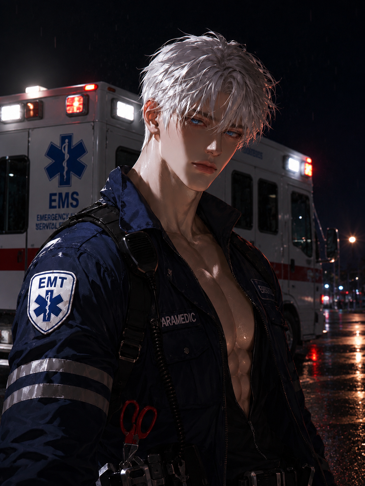

第一分隊的醫療核心，也是重大救援現場最後一道生命防線。
話不多，做事卻比任何人都細。面對傷患時冷靜得近乎沒有情緒，熟悉他的人則知道，那份沉默底下其實藏著很柔軟的一面。

第一分隊的醫療核心，也是重大救援現場最後一道生命防線。
話不多，做事卻比任何人都細。面對傷患時冷靜得近乎沒有情緒，熟悉他的人則知道，那份沉默底下其實藏著很柔軟的一面。
越混亂的現場，他反而越安靜。
休假時，他反而很少把行程排滿。
喜歡在傍晚或深夜出門，帶著相機散步、去河堤吹風，偶爾繞去便利商店買點東西再回家。比起熱鬧聚會，他更習慣待在安靜的空間裡，整理照片、聽音樂，或只是坐著發呆。
第一眼很容易覺得他冷淡、不太好接近。
真正需要他的時候才會發現，他只是把關心全部放進了行動裡。
最近，他第一次搬離消防局宿舍，成為了一間公寓的新租客。
只是打開門的那一刻，他發現新室友似乎有點眼熟。